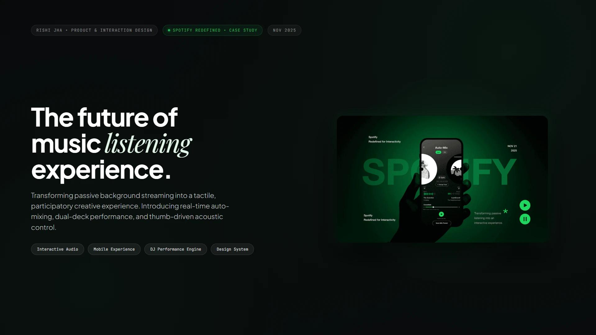
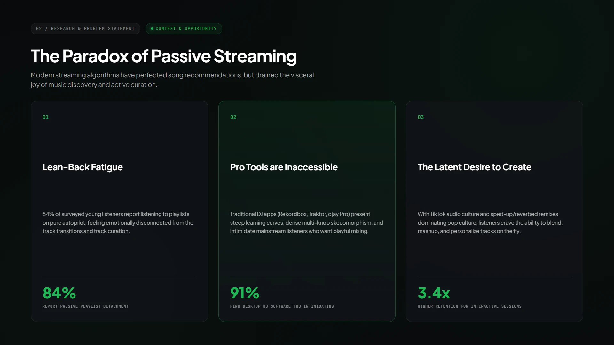
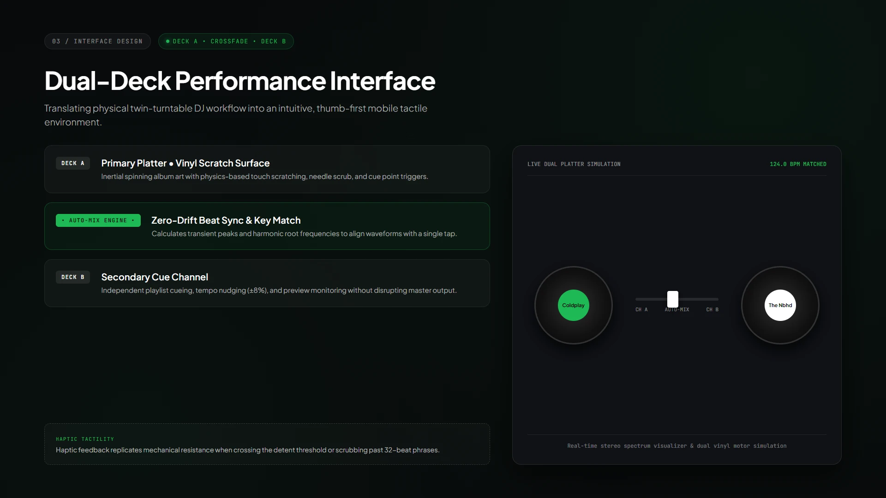
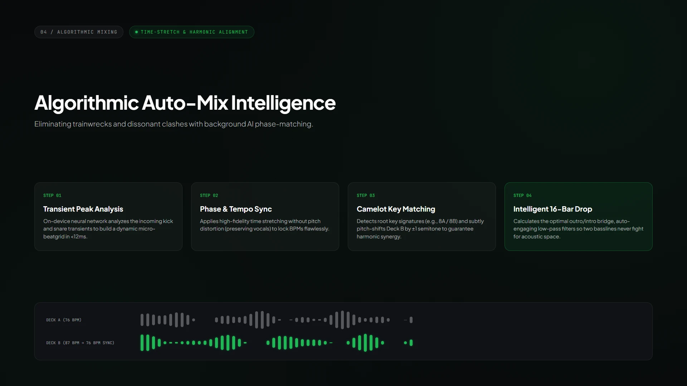
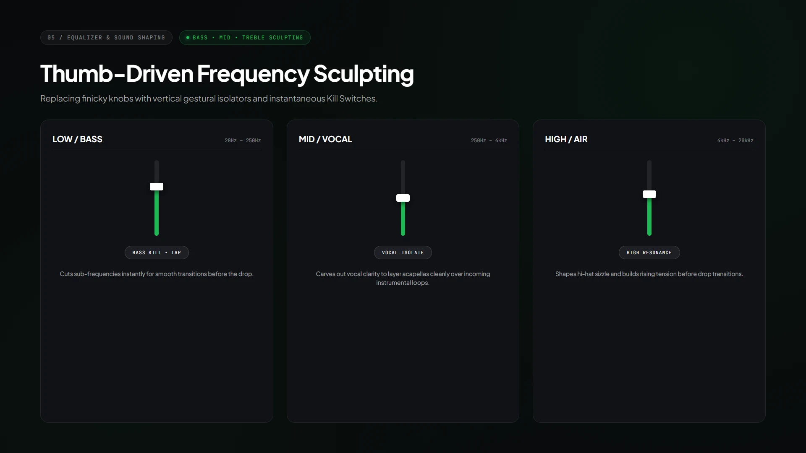
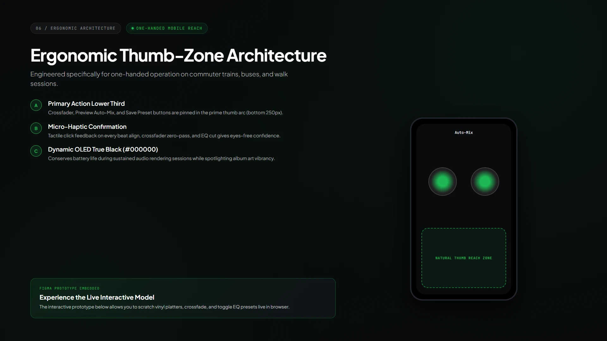

← Back to Works
Case Study · Interactive Audio & Music Systems
Spotify Redefined
Transforming passive music streaming into an interactive, tactile experience. Introducing real-time auto-mixing, dual-deck DJ performance, and thumb-driven frequency sculpting directly inside Spotify.
01 / Overview & Vision
02 / Problem Statement & Research

02 / Discovery & Insights
Overcoming algorithmic detachment & pro-software barriers
03 / Dual-Deck Performance Interface

03 / Deck A • Crossfade • Deck B
Tactile turntable mechanics translated into mobile touch
04 / Algorithmic Auto-Mix Engine

04 / AI Phase & Key Alignment
Transient detection, Camelot harmonic matching & phrase drops
05 / 3-Band Parametric Equalizer

05 / Acoustic Control
Low, Mid, and High frequency isolators with one-tap Kill Switches
06 / Ergonomic Architecture & Interaction

06 / Single-Hand Reach
Optimized for on-the-go commuter reachability & micro-haptics
07 / Hands-On Live Prototype
• FIGMA INTERACTIVE EMBED
Try the Live Auto-Mix & Dual Deck Interface
Interact with the live mobile prototype below: tap the center Auto-Mix controls, toggle Deck and EQ modes, scratch the vinyl discs, and experience seamless beat-matching.
Next Selected Work
Maharashtra Council of Homoeopathy
→
Back to Top ↑